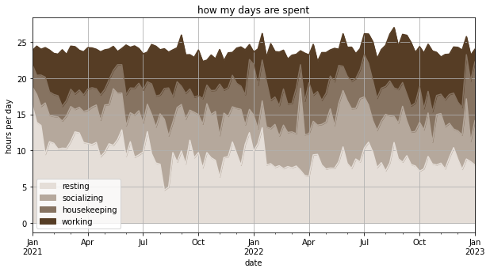
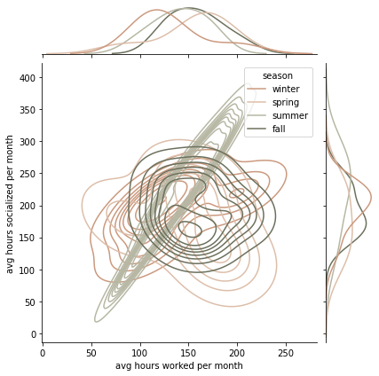
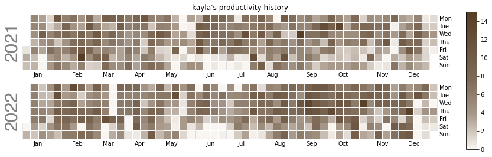
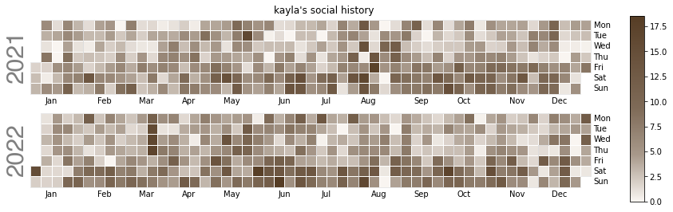
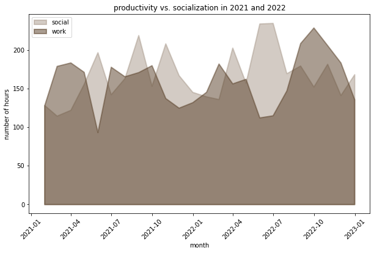
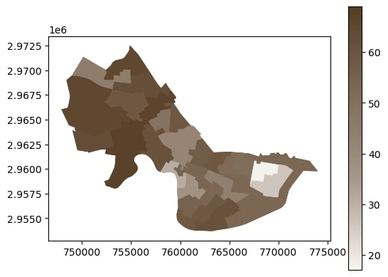
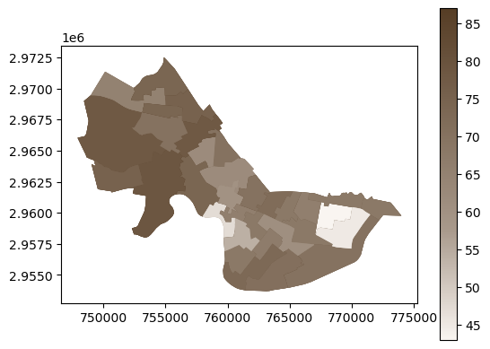
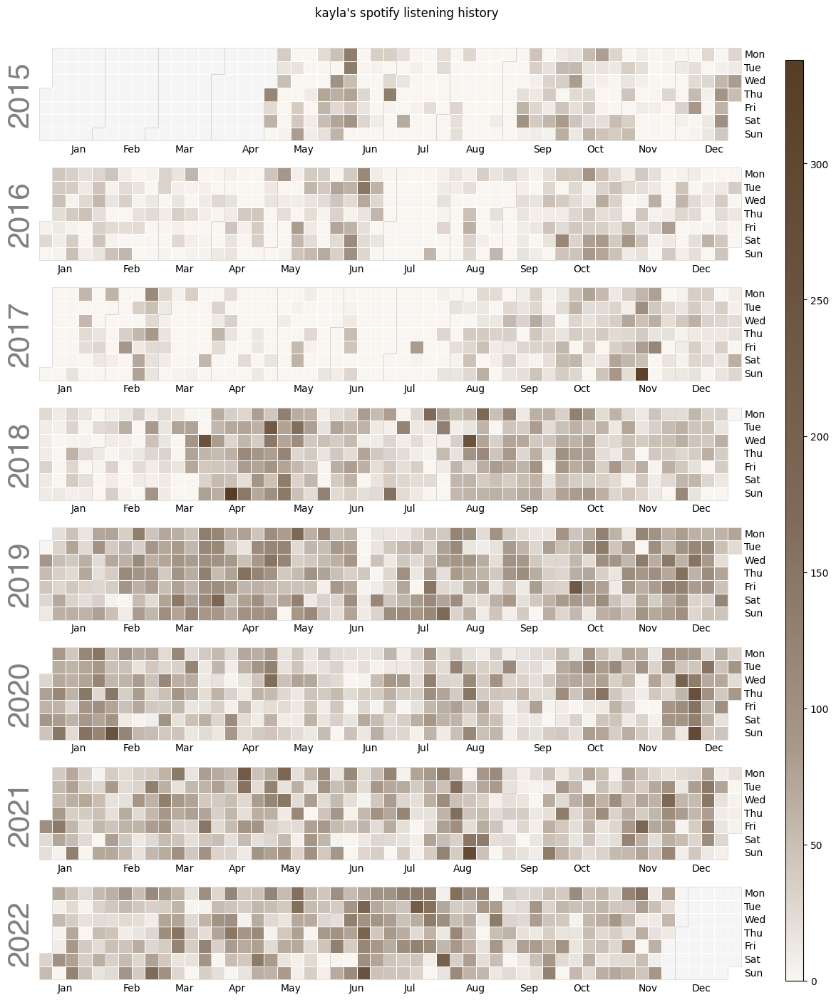

<!DOCTYPE html>
<html lang="en">
<head>
  <meta charset="utf-8">

  <link rel="icon" href="images/kh.png">
  <title>kayla huang</title>

  <link rel="stylesheet" href="assets/css/styles.css">
</html> 

<body>
    <div class="slp">
        <div class="big-name">
            <h1><b>silly little pictures</b></h1>
            
        </div>
        <p class="p-padding"> <b> back to the  <a href="./index.html">main page</a> </b> </p>
        <br>

        <div class="p-body">
            <p><b>jan 31, 2023</b></p>
            <p>the days are long and the years are short.</p>
            <br>
            
            <br>
            <br>
            
            <p><b>jan 29, 2023</b></p>
            <p>comparing the distributions of my time (per month) spent socializing and working as categorized by season. (viz inspo: jeff wang)</p>
            <br>
            
            <br>
            <br>
            <p><b>jan 13, 2023</b></p>
            <p>for the last three years, i've been logging everything i do in my google calendar. finally took a closer look at this data to see how i've been living my life. the following is a heatmap of how many hours i worked a day in the last two years.</p>
            <br>
            
            <br>
            <br>
            <p>seems like junior fall, 2022 fall, was weirdly the biggest grind. meanwhile, socially, summers and weekends are hotter, to the surprise of absolutely no one. </p>
            <br>
            
            <br>
            <br>
            <p>and some random area chart comparing the two directly.</p>
            <br>
            
            <br>
            <br>
            <p>not the most interesting insights—still trying to see what else i can squeeze out of this.</p>

            <br>
            <br>

            <p><b>dec 4, 2022</b></p>
            <p>learning how to use cambridge public data and gis/geopandas. simple map of voter turnout in cambridge through the 2006, 2010, and 2014 state elections.</p>
            <br>
            
            <br>
            <br>
            <p>same deal for presidential elections in those three years, but i don't quite like the scaling.</p>
            
            <br><br>
            <p>funny that the comparative percentages are almost identical, though. also note that the white patches correspond roughly to harvard and mit. curious.</p>

            <br>
            <br>

            <p><b>dec 4, 2022</b></p>
            <p>got curious about my spotify listening habits over the years (streams/day)</p>
            <br>
            
        </div>
    </div>
</body>